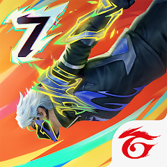
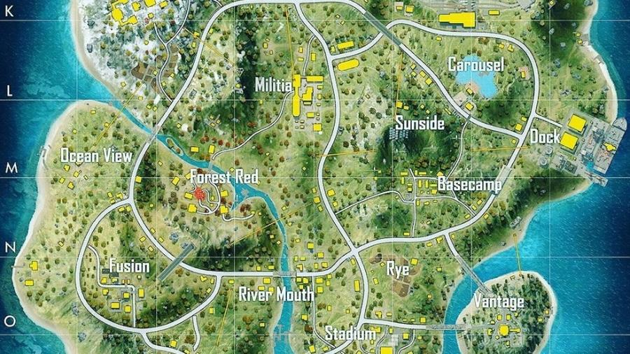
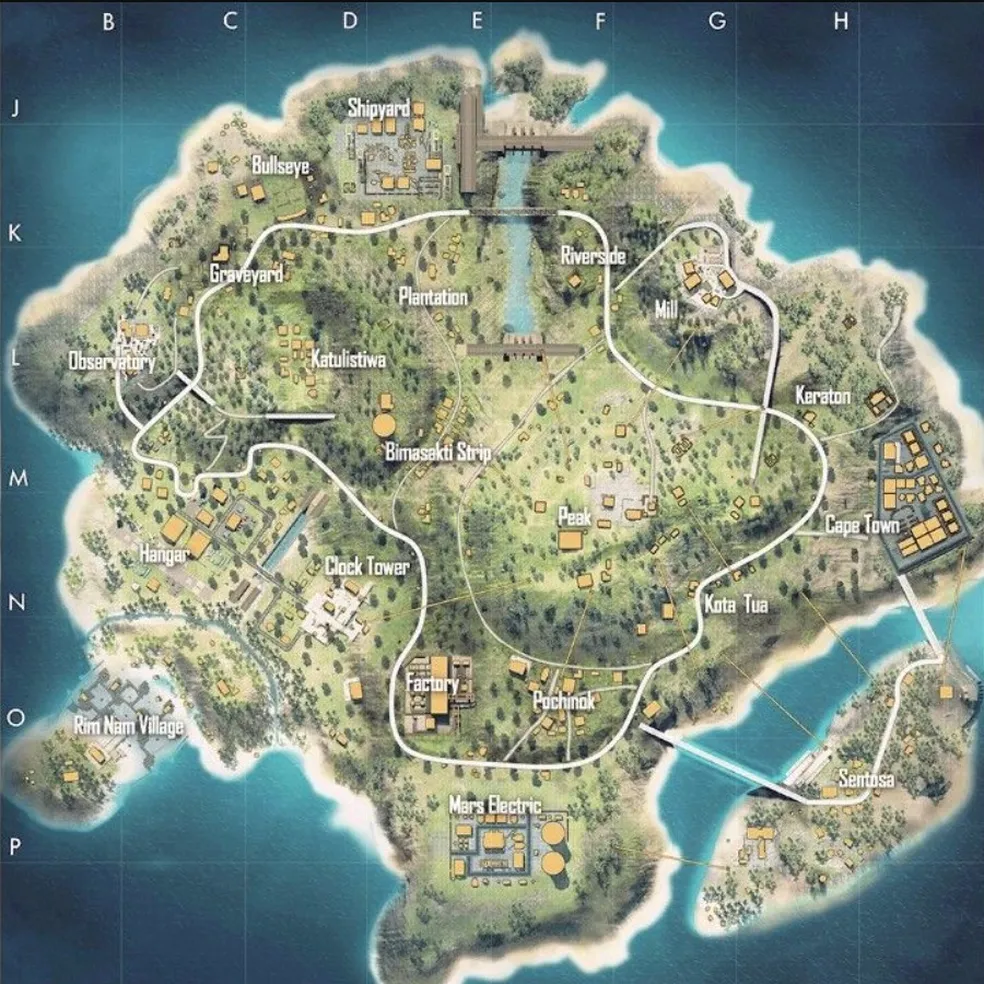
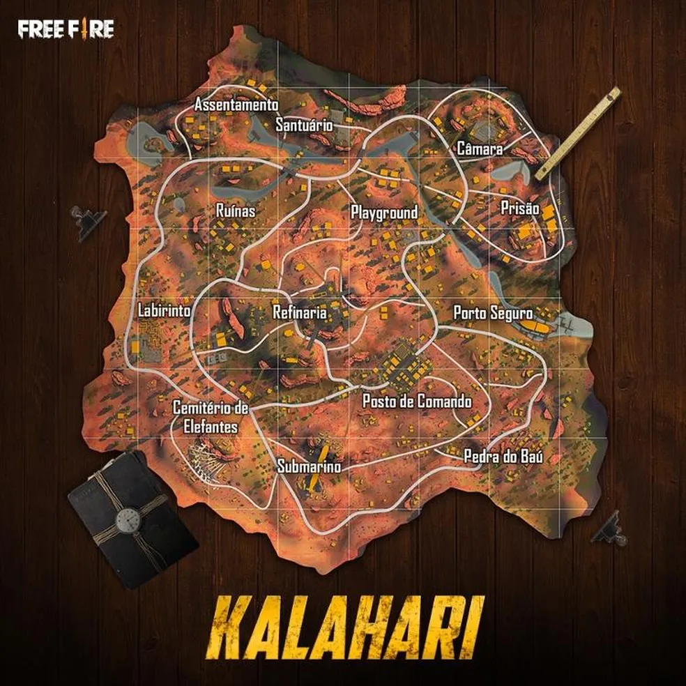
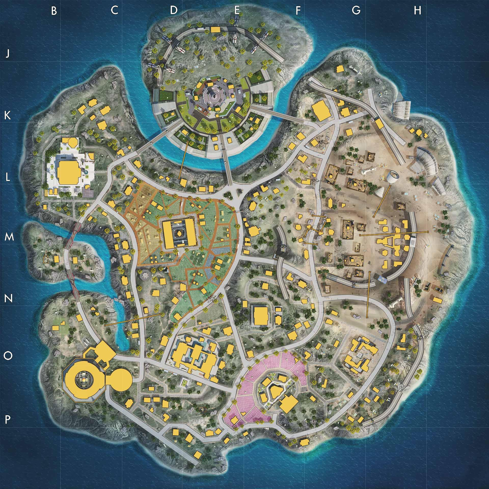

Free Fire: o melhor conteúdo do jogo Battle Royale da Garena é no mrt ff news
Site com personagens, jogadores, times e mapas do Free Fire você vê primeiro aqui no mrt ff news!!!
DESCRIÇÃO
Free Fire é um jogo de tiro e sobrevivência mundialmente famoso disponível no celular. Cada partida dura cerca de 10 minutos e te coloca em uma ilha para enfrentar 49 jogadores na luta pela sobrevivência. Os jogadores chegam ao mapa de avião e podem escolher quando saltar de paraquedas.

MAPAS
para vocês que querem analisar os mapas do jogo, forneceremos aqui embaixo as imagens de todos os mapas do joguinho de vocês!!!
ALPINE

O "mapa Alpine" em Free Fire apresenta um ambiente montanhoso e nevado.
Principais locais incluem o Templo, que oferece loot e uma visão estratégica; o Pico do Montanha, ideal para observação; e a Vila Neve, para combates em áreas fechadas.
As condições climáticas afetam a visibilidade e a movimentação. Jogadores devem usar elevações para vantagem tática, adaptar-se ao clima e escolher bem os pontos de loot para obter sucesso.
BERMUDA

O mapa Bermuda em Free Fire é um cenário variado com praias, áreas urbanas, florestas e montanhas.
Locais-chave incluem a Cidade de Peak (para visão estratégica), Pochinok (para loot e emboscadas), Factory (com loot rico e combates intensos),
Mars Electric (para bom loot e controle de área). O mapa oferece uma ampla distribuição de loot e exige estratégias adaptativas
para aproveitar os diferentes ambientes e posições estratégicas.
KALAHARI

O mapa Kalahari em Free Fire é um deserto com terrenos áridos e variados. Locais importantes
incluem Desert Camp (para loot e confrontos), Pecado (uma cidade em ruínas para emboscadas), Refinery (área industrial com loot valioso),
Command Post (base militar estratégica). O mapa exige estratégias adaptativas devido ao seu ambiente desértico e desafiador.
PURGATORIO

O mapa Purgatório em Free Fire é um cenário urbano e variado. Inclui Lumber mill (área industrial com loot e combate intenso),
forge (local ideal para loot e batalhas), moathouse (conhecida como ilha)é ( uma grande ilha mansão com loot valioso e espaço para estratégias),
Brasília (zona com boas construções, loot e trocações insanas).
O mapa exige que os jogadores adaptem suas estratégias às diferentes características e pontos estratégicos.
NOVA TERRA

O mapa Nova Terra em Free Fire é um cenário futurista com locais-chave como Central City (centro urbano com loot abundante),
Haven (área estruturada para combate), Lab (laboratório com loot valioso), Deserted Town (cidade abandonada para emboscadas)
e Tech Center (instalação tecnológica com boa visão estratégica). O mapa exige estratégias adaptativas para explorar seus variados ambientes e pontos estratégicos.